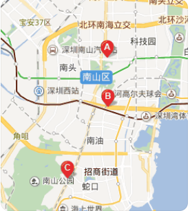

负责重点项目的前端技术方案和架构的研发和维护工作;
5年以上前端开发经验、精通html/css3/javascript等web开发技术;
精通bootstrap、vue、angularjs、reactjs等框架，熟练掌握以上一种;
代码风格严谨，能高保真还原设计稿，能兼容各种浏览器;
对web前端的性能优化以及web常见漏洞有一定的理解和相关实战;
具有良好的分析解决问题能力，能独立承担任务，有开发速度把控能力;
责任心强，思路清晰，抗压能力好，具有良好的对外沟通和团队协作能力;
上海市-徐汇区-腾云大厦
